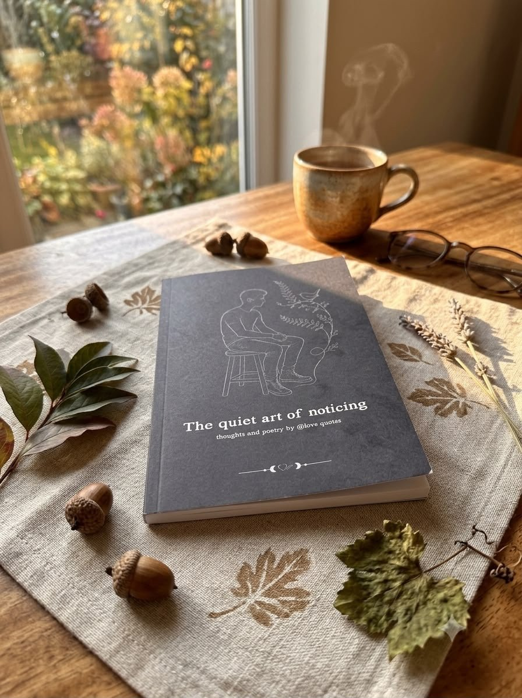

About
The art of feeling
Love Quotes is a digital sanctuary born to explore the infinite, often unspoken nuances of human connection, solitude, and personal growth. A safe space for moments when you don’t know how to feel, inviting you to slow down, listen to your inner voice, and discover that you are never truly alone in what you carry.
5Mfollowers on Instagram
15years of words
